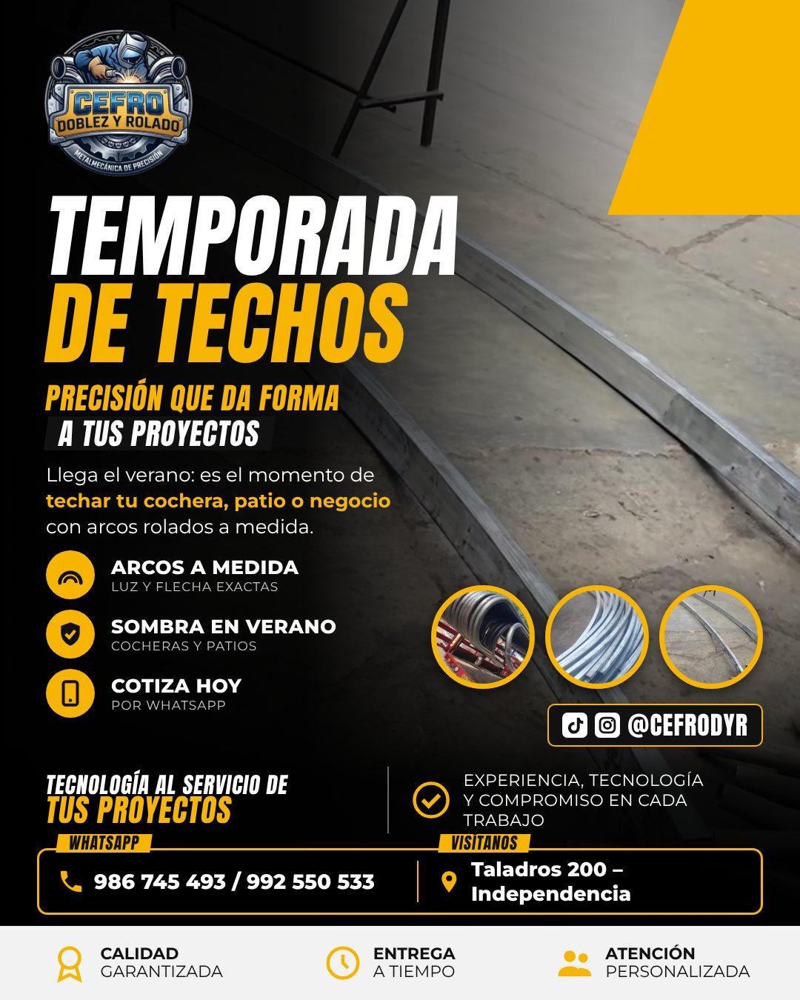
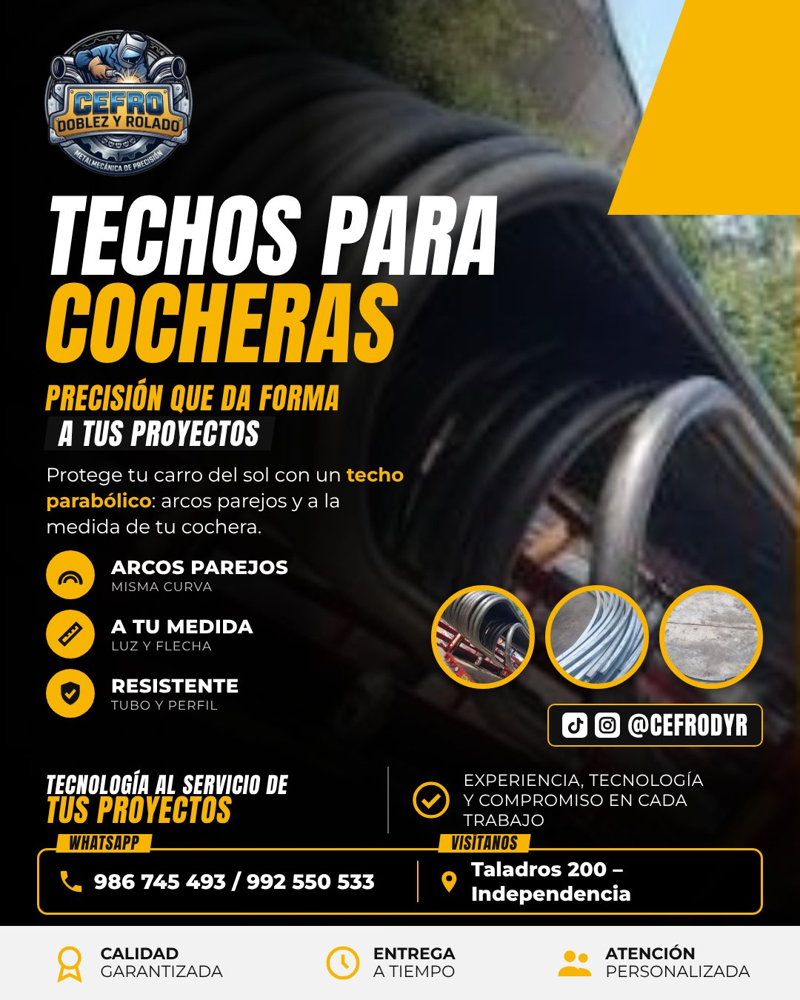
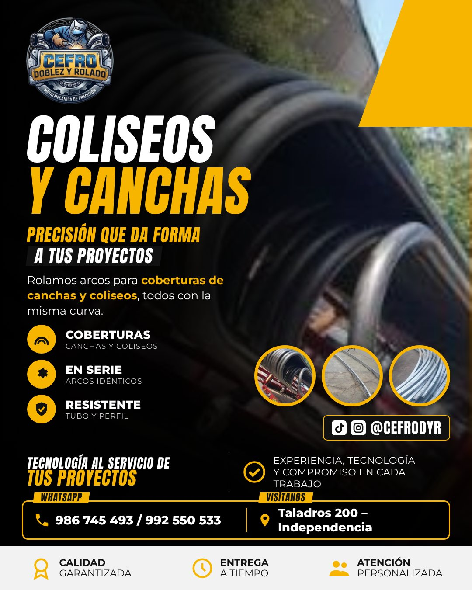
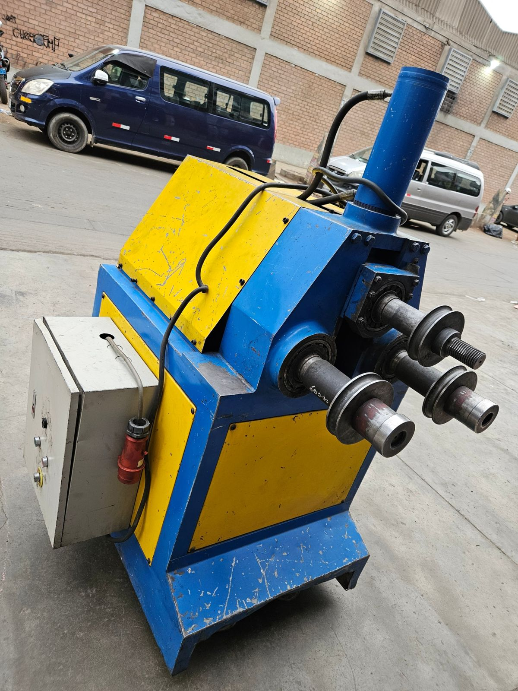

Techos parabólicos, rolado y doblez
Desliza para ver más y toca una imagen para verla en grande.




Nuestros servicios
Trabajo a medida para obras, techos y estructuras.

Techos parabólicos a medida
Rolamos los arcos de tu techo parabólico con el radio exacto y todos iguales, en acero, galvanizado, ángulo, platina, canaletas, tubo rectangular y tubos schedule. Ideal para cobertizos, estacionamientos, coliseos, galpones y coberturas.
Maquinaria de alta precisión
Contamos con máquinas de alta precisión para rolar y doblar tubos y perfiles con medidas exactas y acabado limpio.



CEFRO Doblez y Rolado
Somos una empresa industrial de metalmecánica de precisión ubicada en Independencia, Lima. Ofrecemos rolado y doblez de tubos para techos parabólicos, en acero, galvanizado, ángulo, platina, canaletas, tubo rectangular y tubos schedule, además de soldadura para todo tipo de estructuras metálicas.
ContáctenosPublicaciones y novedades
Mira nuestros últimos trabajos en redes sociales.
 Doblez de tubos
Doblez de tubosDoblez de tubos de hasta 3 pulgadas
Publicado el 21 de octubre en nuestro Facebook.
Ver en Facebook → Facebook
FacebookSíguenos en Facebook
Fotos, videos y novedades de nuestros trabajos.
Ir a Facebook → Instagram
InstagramSíguenos en Instagram
Nuestro perfil: @cefrodyr.
Ir a Instagram →Síguenos en TikTok
Videos de nuestras máquinas y trabajos: @cefrodyr.
Ir a TikTok →Contáctenos
Envíanos tus medidas y te respondemos con tu cotización.
Sábados: 8:00 a. m. – 4:00 p. m.